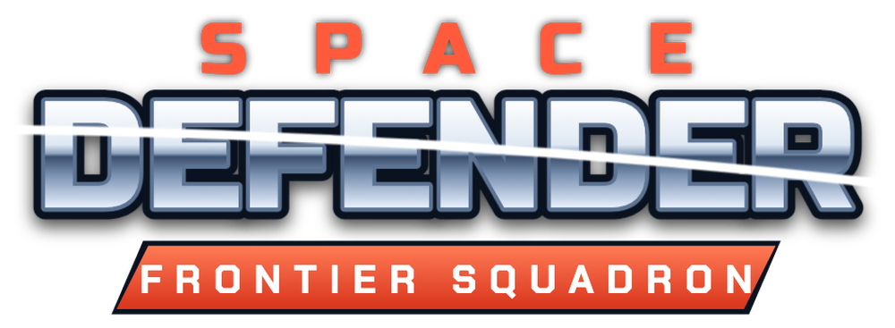
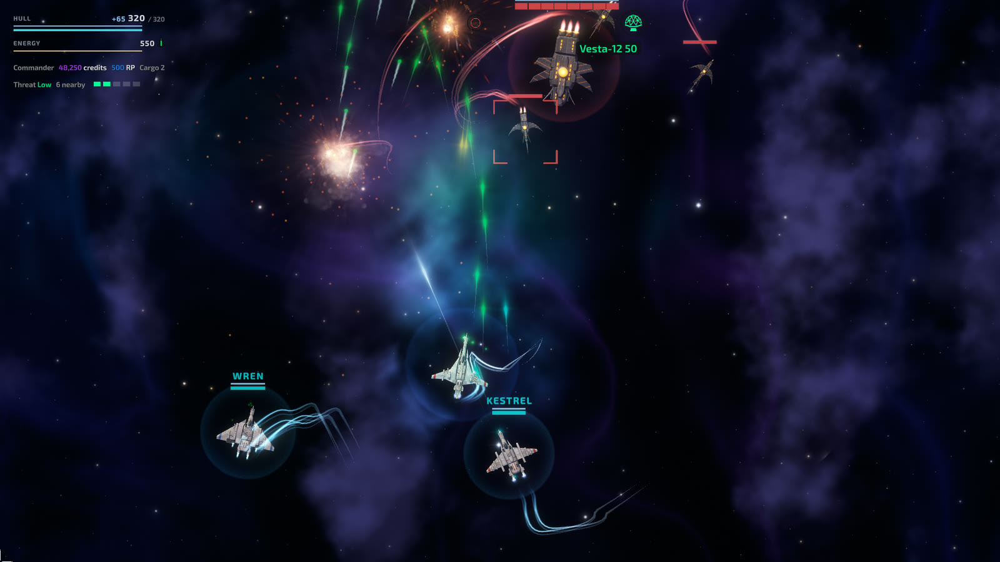
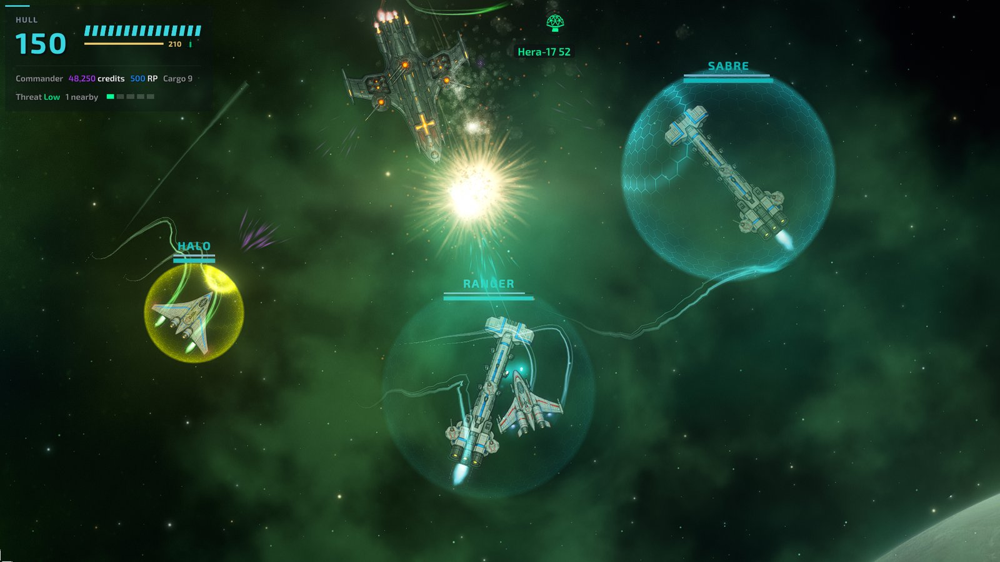
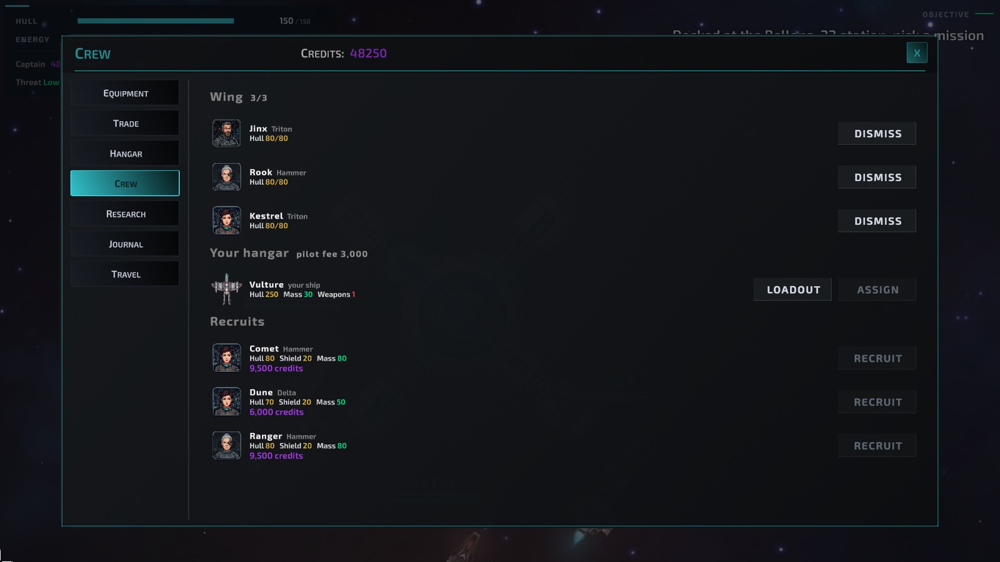
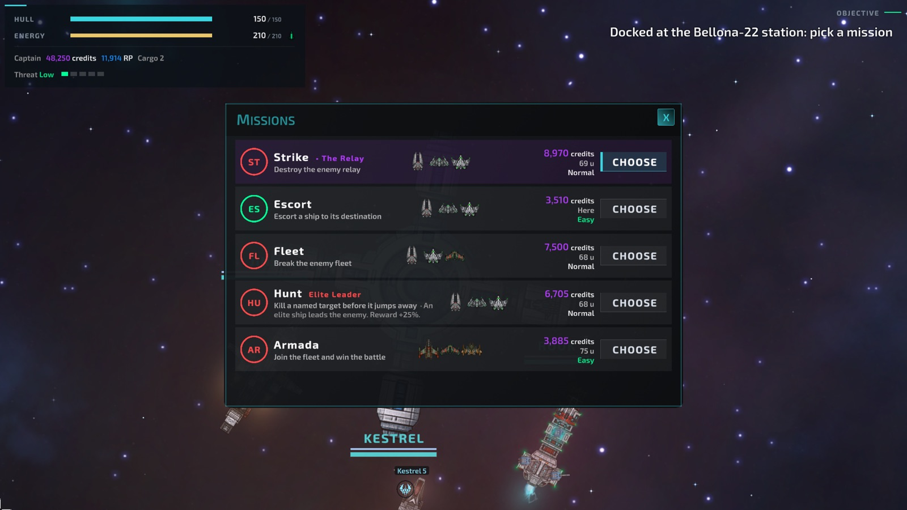
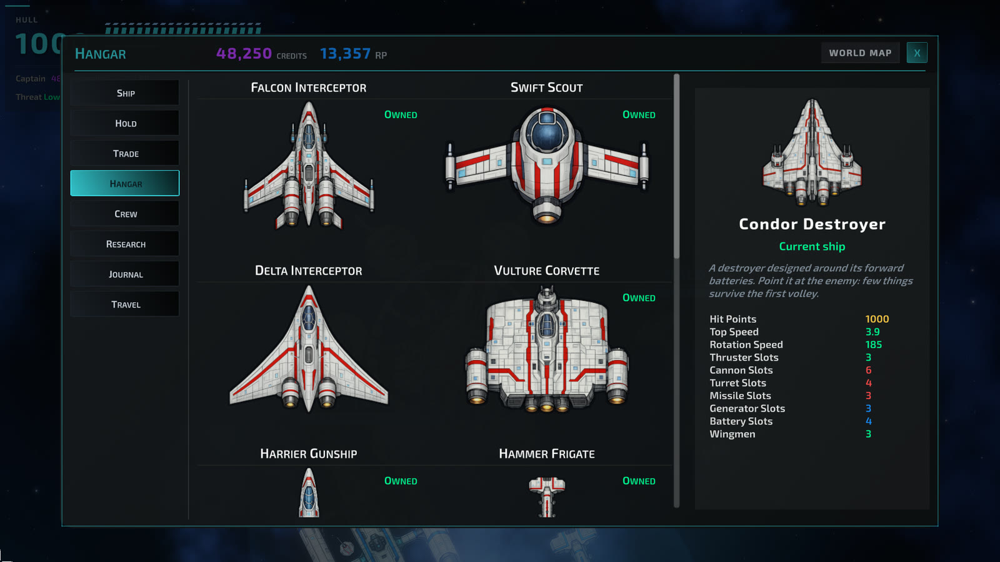

Space Defender: Frontier Squadron
Un shooter spatial vu de dessus avec une vraie progression RPG. Remplissez des contrats dans trois galaxies, équipez votre vaisseau, recrutez jusqu'à trois ailiers, et menez la guerre jusqu'au Nexus. A top-down space shooter with real RPG progression. Take contracts across three galaxies, outfit your ship, recruit up to three wingmen, and carry the war through to the Nexus.
Bande-annonce 1.0 — 60 s1.0 trailer — 60 s Space Defender: Frontier Squadron
La frontière tombe. Tenez la ligne.The frontier is falling. Hold the line.
Les Drones ont envahi trois galaxies, relais après relais. Les stations s'éteignent une à une. Le Commandement n'a plus qu'une réponse : vous, un vaisseau, et tous ceux que vous parviendrez à convaincre de voler à vos côtés. The Drones have swept through three galaxies, relay by relay. Station after station goes dark. Command has one answer left: you, a ship, and whoever you can convince to fly with you.
Space Defender mêle combat spatial twin-stick et progression RPG. Entre deux combats, on s'arrime aux stations pour commercer, acheter des vaisseaux, lancer des recherches et recruter des pilotes. Sur le terrain, on enchaîne treize types de contrats, de l'escorte de convoi à la survie, face à des Drones qui se battent chacun à leur façon. Space Defender blends twin-stick space combat with RPG progression. Between fights you dock at stations to trade, buy ships, research upgrades and recruit pilots. In the field you take on thirteen kinds of contracts, from convoy escorts to holdouts, against Drones that each fight in their own way.
La campagne se déroule en trois actes et treize missions d'histoire, aux côtés de l'amiral Voss, d'Ilse Marin et d'ARIA, de la première ligne de défense d'Aquarii jusqu'à la bataille finale contre le Nexus. The campaign runs across three acts and thirteen story missions, alongside Admiral Voss, Ilse Marin and ARIA, from the first defence line at Aquarii to the final battle against the Nexus.
CapturesScreenshots





Fiche presseFact sheet
Logos, key art, dix captures en 1920 × 1080 et trois GIF. Tous ces éléments peuvent être utilisés librement pour parler du jeu. Logos, key art, ten 1920 × 1080 screenshots and three GIFs. All assets may be used freely in coverage of the game.
FAQ
Faut-il avoir joué à l'accès anticipé ?Do I need to have played Early Access?
Non. La 1.0 est le jeu complet : la campagne en trois actes, les ailiers, neuf nouveaux types de contrats, les nouvelles familles d'armes et une passe d'équilibrage entière. Les possesseurs de l'accès anticipé reçoivent la mise à jour gratuitement.No. The 1.0 is the complete game: the three-act campaign, wingmen, nine new contract types, new weapon families and a full balancing pass. Early Access owners get the update for free.
Le jeu est-il jouable à la manette ?Is there controller support?
Oui, du menu au combat, avec navigation complète. Le clavier et la souris restent le contrôle de référence pour la visée.Yes, from the menus to combat, with full navigation. Mouse and keyboard remain the reference for aiming.
L'IA a-t-elle servi à faire le jeu ?Was AI used to make the game?
Oui, en partie, et autant le dire clairement. J'ai travaillé avec un assistant IA pour une partie du code et pour la relecture des textes en français et en anglais.Yes, in part, and it is worth saying plainly. I worked with an AI assistant on part of the code and on proofreading the English and French text.
Le game design, l'équilibrage, l'écriture et les choix créatifs sont les miens : c'est moi qui décide de ce qui entre dans le jeu et de ce qui en sort. La musique est composée par Alkakrab, un artiste humain, utilisée sous licence (Sci-Fi Music Packs), et les effets sonores viennent de ZapSplat.The game design, the balancing, the writing and the creative decisions are mine: I decide what goes into the game and what comes out. The music is composed by Alkakrab, a human artist, used under licence (Sci-Fi Music Packs), and the sound effects come from ZapSplat.
Une version Mac, Linux ou mobile ?Mac, Linux or mobile version?
La 1.0 sort sur Windows. Une version Android est à l'étude après la sortie ; rien n'est promis pour Mac et Linux aujourd'hui.1.0 ships on Windows. An Android version is being looked at after launch; nothing is promised for Mac and Linux today.
Comment signaler un bug ou proposer une idée ?How do I report a bug or suggest an idea?
Le Discord, de préférence : j'y lis tout. C'est de là qu'est venu le système d'ailiers.On Discord, ideally: I read everything there. That is where the wingmen system came from.